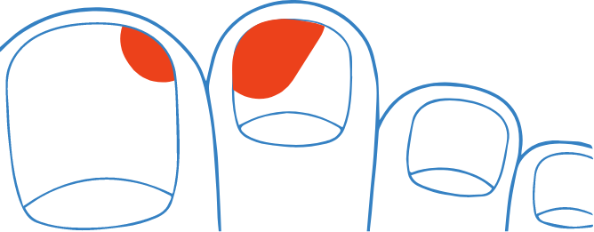

MICOSE
DE UNHA
A micose de unha é uma doença comum e tratável que ocorre quando suas unhas são infectadas por fungos. A incidência de micose nas unhas dos dedos dos pés é maior do que nas unhas dos dedos das mãos.
Os fungos crescem se alimentando
das unhas e de camada exterior de pele, causando danos acima e abaixo delas, se não tratada, os fungos podem se espalhar por toda a unha, tornando o tratamento mais difícil. Os fungos de uma unha infectada podem também se espalhar para
meias e para sapatos e dessa forma, infectarem outras unhas e até a pele.
**Os fungos de uma unha infectada também podem se espalhar para meias e para sapatos e desta forma, infectarem outras unhas e até a pele. Esse diagrama é para fins ilustrativos.
Caso as unhas apresentem sinais de alteração, pode ser o indício de que um tratamento é necessário. A melhora não acontece sozinha. Para um tratamento correto, converse com um médico dermatologista ou farmacêutico.
Caso as unhas apresentem sinais de alteração, pode ser o indício de que um tratamento é necessário. A melhora não acontece sozinha. Para um tratamento correto, converse com um médico dermatologista ou farmacêutico.
Provavelmente, você esteve em contato com os fungos no chão ou em alguma superfície contaminada.
Um ambiente quente e úmido [como dentro de sapatos totalmente fechados] ajuda no crescimento de fungos.
Um terço das pessoas com micose de unha também sofrem de pé de atleta (frieira)
Existem muitos tipos de tratamentos para micose de unha que incluem cremes, esmaltes, tratamentos orais, entre outros.
Entretanto, não existe nenhum tratamento que cure rapidamente a micose. É preciso um medicamento antifúngico para
tratar a micose de unha. Os medicamentos antifúngicos contêm um ingrediente que realmente elimina os fungos.
Obtendo a máxima eficácia de seu tratamento.
O medicamento antifúngico em forma de esmalte (que você
deve aplicar na superfície da sua unha) é mais eficaz quando você segue corretamente as instruções de uso.
Tratamentos em forma de cremes, loções, entre outros não específicos para o cuidado das unhas, podem não ter o desempenho
desejado.
As formulações em esmalte para unhas possuem vários benefícios, pois:
Favorecem a penetração do produto na unha.
Menor número de aplicações, já que forma uma película sobre a unha que mantém o princípio ativo em contato por mais tempo.
São fáceis de usar.
Por que começar a tratar o mais breve possível? Assim como a pele e o cabelo, as unhas levam bastante tempo para crescer, até 6 meses para renovar as unhas das mãos e de 9 a 12 meses para as unhas dos pés, portanto, a duração do tratamento para a micose de unha depende da rapidez com que suas unhas crescem, assim como da quantidade de fungos.
Quanto mais cedo você começar o tratamento, menos tempo os fungos terão para se espalhar e mais cedo a infecção poderá ser controlada e até curada.
Como a unha volta a crescer.
A micose de unhas também é conhecida como onicomicose.
Ela ocorre quando um fungo penetra em sua unha.
A incidência de micose de unha é maior nas unhas dos dedos dos pés do que nas unhas dos dedos das mãos.
Uma vez presentes na unha, os fungos se alimentam da queratina, que é a proteína que compõe suas unhas e a superfície de sua pele.
Estima-se que 1 em cada 12 pessoas tem micose de unha. Se você sofre de diabetes, o risco é ainda mais alto.
O risco de desenvolver micose de unha aumenta com a idade.
A boa notícia é que a micose de unha pode ser tratada com um medicamento antifúngico apropriado.